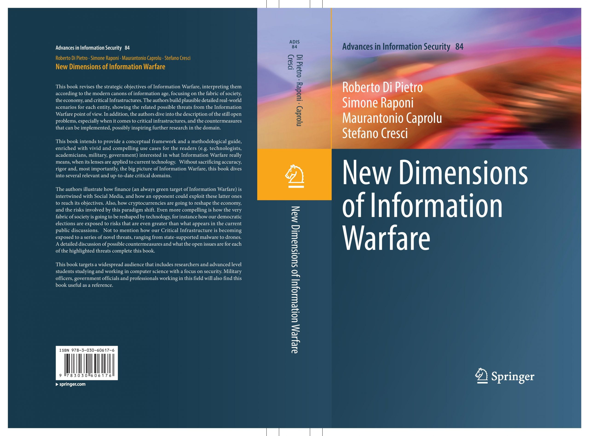

|
Simone Raponi
I am currently a Machine Learning Scientist at NATO STO Center for
Maritime and Experimentation. I am advised by Paolo
Braca and Leonardo
Millefiori. My major research interests include
Artificial Intelligence, Cybersecurity, and Privacy.
I got both my Bachelor and my Master's Degree (with honors)
in Computer Science at Sapienza, University of Rome, Italy,
and a Ph.D. in Computer Science and Engineering at Hamad Bin
Khalifa University in Doha, Qatar.
During my Bachelor's Thesis, advised by Francesco
Parisi Presicce, I came up with a theoretical
administrative model for the Attribute-Based Access Control
paradigm.
During my Master's thesis, advised by Julinda
Stefa, I exploited AI techniques to geographically
deanonymize bad guys in the Dark Web. Two scientific
articles have been produced in the process and publicated in
top venues.
My Ph.D., advised by Roberto
Di Pietro and co-advised by Gabriele
Oligeri, allowed me to exploit my AI-related
knowledge
to address Cybersecurity challenges.
During my Ph.D., 1 book, 9 papers
published to international journals, 11 papers published to
international conferences, and 2 patents have been produced,
allowing me to be awarded with
the Best Ph.D. in Computer Science and Engineering
Award.
Email /
CV /
Google
Scholar /
Github
|
|
- In October 2022 our paper PAST-AI: Physical-layer Authentication of Satellite
Transmitters via Deep Learning
has been accepted for publication in the prestigious IEEE Transactions on
Information Forensics & Security!
- In July 2021 I joined the NATO STO Center
for Maritime and Experimentation as a Machine Learning Scientist
|

|
Our book is finally published!
New Dimensions of Information Warfare
Roberto Di Pietro, Simone Raponi, Maurantonio Caprolu,
Stefano Cresci
This book revises the strategic objectives of Information
Warfare,
interpreting them according to the modern canons of
information age,
focusing on the fabric of society, the economy, and critical
Infrastructures.
The authors build plausible detailed real-world scenarios
for each entity,
showing the related possible threats from the Information
Warfare point of view.
In addition, the authors dive into the description of the
still open problems,
especially when it comes to critical infrastructures, and
the countermeasures that can be implemented,
possibly inspiring further research in the domain.
|
- I have been awarded with the Best Ph.D. in Computer Science and Engineering
Award!
- In April 2021 I completed my Ph.D.! Thesis: AI-Driven Detection of
Cybersecurity-related Patterns
- (2021): Iberdrola (Qatar): Machine Learning Scientist in
the
Smart Grid
Lab.
Development and Implementation of a synchronous distributed data
acquisition algorithm for Power Line Communication devices located
in
geographically distant points. The data thus acquired allowed the
creation of a rich database to study the communication delay of
Power
Line Communication devices adopted worldwise and possibly make
AI-based
inferences.
- (2019): Iberdrola (Qatar): Machine Learning Scientist in
the
Smart Grid
Lab.
Development and Implementation of an Artificial
Intelligence-driven
noise forecasting model (RNN-LSTM) for Power Line Communication
devices.
- (2018): Telefonica Research (Barcelona): Machine Learning
and
Big Data Scientist.
Analysis and Experimentation of the impact of Artificial
Intelligence to
the privacy of the users interacting with Internet services.
- US Patent App. 16/657,088
Methods and Systems for Verifying the Authenticity of a Remote
Service
Roberto Di Pietro, Savio Sciancalepore, Simone Raponi
- US Patent App. 16/880,525
Online Account Access Recovery System and
Method Utilizing Secret Splitting
Roberto Di Pietro, Simone Raponi
Publications
2022
2021
2020
2019
2018
|
Academic Services
Technical (Program) Committee
- International Conference on Ambient Systems, Networks and
Technologies (ANT 2022)
- International Conference on Database and Expert Systems
Applications (DEXA 2022)
- International Conference on Ambient Systems, Networks and
Technologies (ANT 2021)
- International Conference on Database and Expert Systems
Applications (DEXA 2021)
- Symposium on Access Control Models and Technologies (SACMAT
2021)
- International Workshop on Cyber Crime (IWCC 2021)
- International Workshop on Cyber Crime (IWCC 2020)
- International Symposium on Foundations & Practice of Security
(FPS 2020)
- International Conference on Ambient Systems, Networks and
Technologies (ANT 2020)
Reviewer
- IEEE International Conference on Computer Communication
(INFOCOM)
- ACM Conference on Security and Privacy in Wireless and Mobile
Networks (WISEC)
- Transactions on Emerging Telecommunications Technologies
- Computer Communications (COMCOM)
- Computer Networks (COMNET)
- IEEE Internet of Things Journal
- Pervasive and Mobile Computing
- International Journal of Information Security
- Journal of Computer Security
- IEEE Access
- IET Information Security
- Security and Communication Networks
Session Chair
- International Conference on Cloud Computing (2019) -- Session
VII: Cloud Resources Optimization, San
Diego (USA)
Executive Assistant
- Qatar International Cyber Security Contest (2019) -- Doha (QA)
(January 2019 – December 2019)
Mentor
- Master’s Thesis – Title: Terminator: a Termination Effect
on Symmetric Key Encryption by Hybrid
Ransomware, Student: Ahmad Nasser A. A. Alkuwari
- Master’s Thesis – Title: Unikernels for Web Applications
and Services: Analysis, Security Assessment, and
Offensive Techniques, Student: Faher Bakri
- Master’s Thesis – Title: Fake News Propagation
Blueprint, Student: Zeinab Khalifa
|
|
{kind=link}